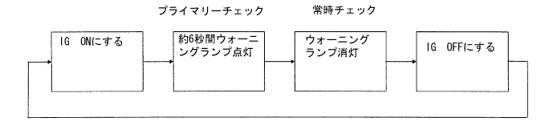

SRS Airbag System Diagnosis System |
Turn the ignition switch OFF, wait at least 2 seconds, then turn the ignition switch ON; the warning light comes on for approximately 6 seconds and the airbag and pretensioner system is diagnosed.
If a malfunction is detected during the primary check, the warning light remains on even after approximately 6 seconds have elapsed since the ignition switch was turned ON.
When the primary check is complete (the warning light goes off approximately 6 seconds after the ignition switch is turned ON), the airbag computer assembly puts the system into a deployable state and constantly monitors the system for malfunctions.

If a malfunction is detected during the constant check, the airbag computer assembly operates as follows.
The warning light comes on.
The warning light comes on and then goes off.
The warning light stays on or does not come on.
When the system is normal
The warning light comes on only during the primary check period (approximately 6 seconds after the ignition switch is turned ON).
When a malfunction has occurred in the system
The warning light remains on even after the primary check period.
The warning light goes off once after the primary check period and then comes on again.
The warning light stays on or does not come on due to a malfunction in the combination meter assembly or communication system, etc.
For an airbag computer assembly that has already been activated by a vehicle collision, the warning light remains on even after the primary check period. (*1)